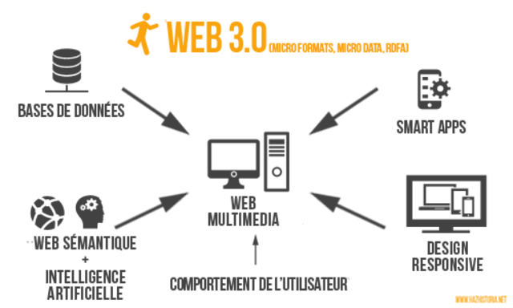

<
| Evolución de las Aplicaciones Web |
| Hitos |
Hechos |
Imágenes |
Referencias |
| Internet |
- Personal
- Interactivo
- Inmediato
- Automático
- Universal y Global
- 24/7
|
|
|
- JC4. (s. f.). Características ,ventajas y desventajas de web 1.0,2.0,3.0 y 4.0 [Diapositivas].
Slideshare. https://es.slideshare.net/JC64/características-ventajas-y-desventajas-de-web-102030-y-40
- Las características de Internet. (2020, 7 noviembre). Titonet.
Recuperado 14 de septiembre de 2022, de https://www.titonet.com/estrategia-digital/las-características-de-internet.html
- Publicado por Ing. Hugo Delgado. (2022, 22 agosto). Web 1.0 ¿Qué es? - Características del inicio de Internet.
Diseño Web akus.net. Recuperado 14 de septiembre de 2022, de https://disenowebakus.net/web-1.php
- undefined [Absolute]. (2020, 20 octubre). Cómo ha Evolucionado la WEB (1970 - 2020) [Vídeo].
YouTube. Recuperado 14 de septiembre de 2022, de https://www.youtube.com/watch?v=mFnRAPHrbN4&t=27s
|
| Web 1.0 |
- Estática
- Uso de framesets
- Guestbooks
- Usuarios:
- Unicamente como lectores
|
|
 |
| Web 2.0 |
- Abierta y Dinámica
- Fortalecimiento del trabajo colectivo
- Amplias aplicaciones para los usuario
- Usuarios:
- Producir contenido y opinar
- Pueden crear espacios propios
|
|
|
| Web 3.0 |
- Inteligencia
- * Permite clasificar las paginas de internet,
un sistema de etiquetado para no solo encontrar información sino que también entenderla.
- Sociabilidad
- * Las comunidades sociales se hacen más exclusivas y complejas.
- Rapidez
- * La transmisión de video en la red y el nacimiento de portales dedicados a esa tarea.
- Distribución
- * Los programas y la información se convierten en pequeñas piezas distribuidas por la Web.
|
|
 |
| Web 4.0 |
- Comprensión del lenguaje natural(NLU)
- Técnicas de Speech-to-Text
- Nuevos modelos de comunicación máquina-máquina(M2M)
- Uso de información de contexto del usuario
- Nuevo modelo de interacción con el usuario
|
 |
 |